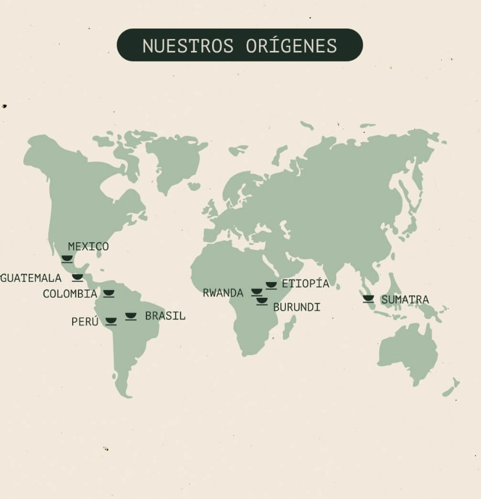

Café Blend
Accesorios
Café para Regalo
Quienes Somos

Los cafés de una cafetería de especialidad suelen tener sus raíces en fincas cuidadosamente seleccionadas, donde el cultivo del café se convierte en un arte. Estas fincas, situadas en regiones como América Latina, África y Asia, dedican un esmero particular a la calidad del grano, respetando tanto las tradiciones locales como el entorno natural. El proceso comienza con cosechas manuales de cerezas maduras y continúa con métodos de procesamiento que destacan las características únicas de cada origen, desde las notas frutales de Etiopía hasta los matices de chocolate en Colombia.
Cada taza es el resultado de una cadena de trabajo colaborativo: agricultores apasionados, tostadores expertos y baristas que realzan los sabores en cada extracción. La especialidad no es solo una cuestión de calidad, sino también de conexión entre el origen del café, quienes lo cultivan, y los amantes del café que disfrutan cada sorbo. Es un viaje que celebra la diversidad de su origen y la historia que lleva consigo.